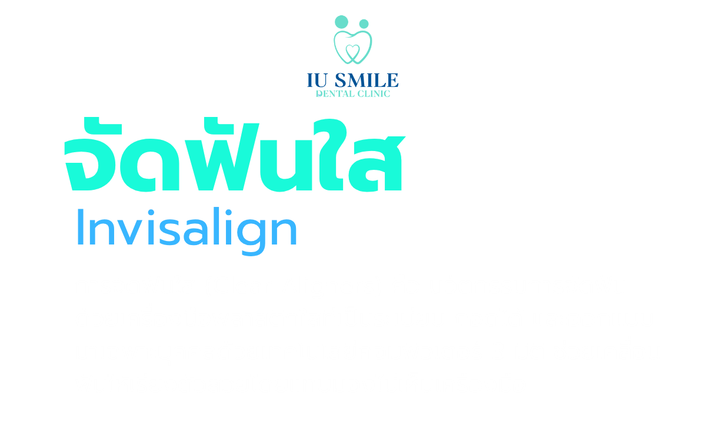
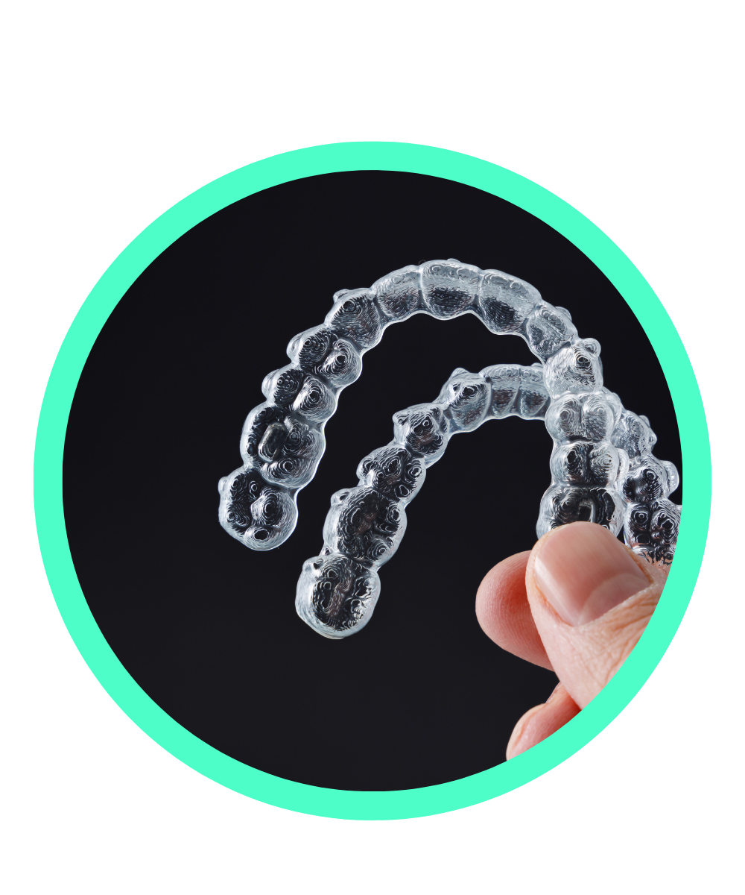
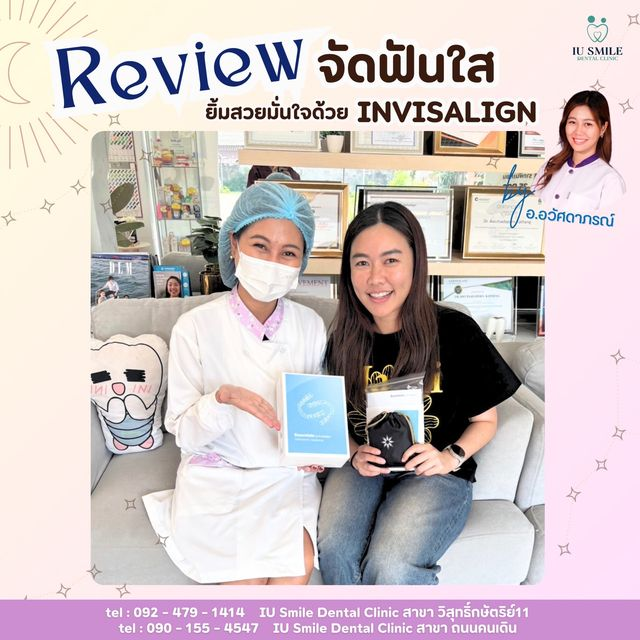
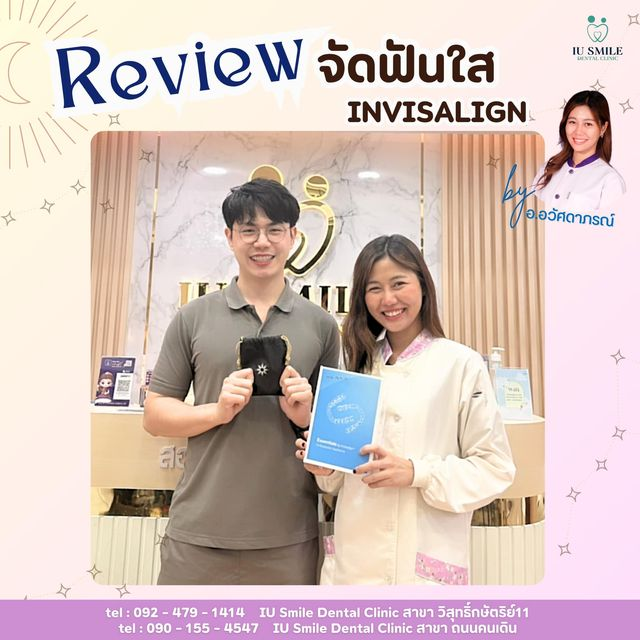
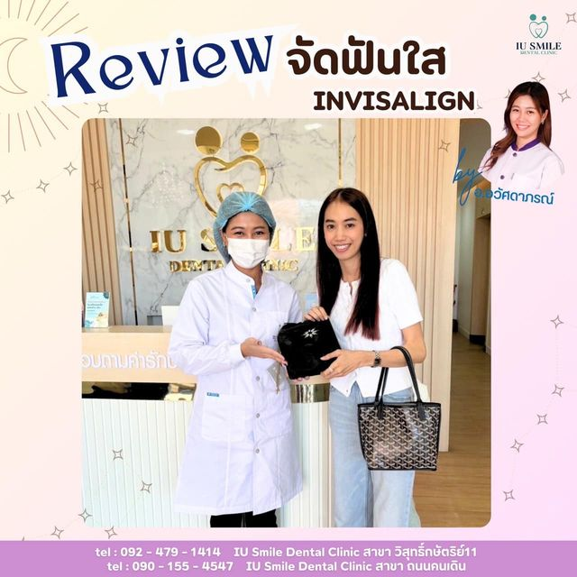
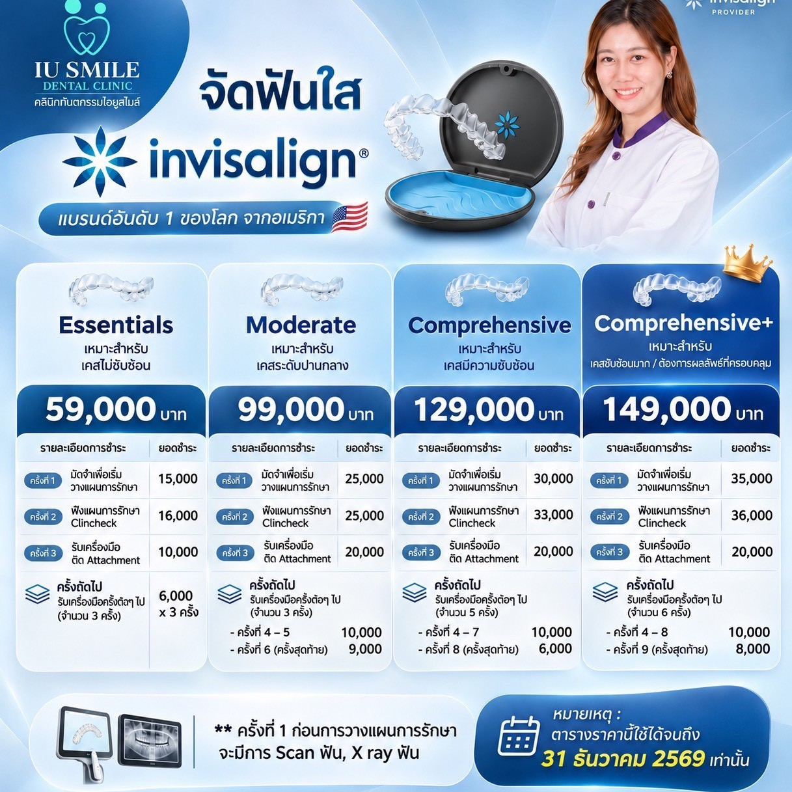

นัดหมายปรึกษา
เครื่องมือจัดฟันใสผลิตจากวัสดุ SmartTrack ซึ่งเป็นพลาสติกโพลีเมอร์ใสชนิดพิเศษทางการแพทย์ที่ออกแบบมาให้สวมครอบพอดีกับรูปร่างฟันแต่ละซี่อย่างแนบสนิท เมื่อสวมใส่แล้วจะมีความใสกลมกลืนไปกับฟันธรรมชาติ ทำให้คนรอบข้างแทบไม่สังเกตเห็นว่ากำลังจัดฟันอยู่ จึงเหมาะอย่างยิ่งสำหรับวัยทำงาน ผู้บริหาร หรือผู้ที่มีอาชีพที่ต้องอาศัยภาพลักษณ์และการพบปะผู้คน
ข้อได้เปรียบที่สำคัญคือคนไข้สามารถถอดเครื่องมือออกได้เองทุกครั้งที่ต้องการแปรงฟันหรือใช้ไหมขัดฟัน ต่างจากการจัดฟันแบบโลหะที่มักมีเศษอาหารติดสะสมตามซอกลวดและทำความสะอาดยาก การจัดฟันใสทำให้สามารถแปรงฟันได้ตามปกติ 100% ซึ่งช่วยลดความเสี่ยงในการเกิดฟันผุ คราบหินปูน รอยด่างขาวบนผิวฟัน และปัญหาเหงือกอักเสบในระหว่างการรักษา
ชิ้นงานแต่ละชิ้นจะถูกผลิตขึ้นรูปด้วยเทคโนโลยี 3 มิติ และตัดแต่งขอบด้วยเลเซอร์ให้เรียบเนียนรับกับแนวเหงือกของคนไข้แต่ละรายแบบพอดีเป๊ะ เนื่องจากไม่มีส่วนประกอบของโลหะ แบร็กเก็ต (เหล็กยึดฟัน) หรือลวด จึงช่วยลดความรู้สึกตึงเจ็บได้ดีกว่า และหมดปัญหาเหล็กจัดฟันเกี่ยวริมฝีปาก กระพุ้งแก้ม หรือลวดยาวทิ่มจนเกิดแผลอักเสบในช่องปาก
เนื่องจากทันตแพทย์จะแนะนำให้ถอดเครื่องมือจัดฟันใสออกก่อนรับประทานอาหาร คนไข้จึงสามารถเพลิดเพลินกับเมนูโปรดได้ทุกชนิดอย่างอิสระ ไม่ต้องคอยหั่นอาหารเป็นชิ้นเล็กๆ หรือหลีกเลี่ยงอาหารที่มีความแข็ง เหนียว กรอบ ซึ่งมักจะเป็นข้อห้ามสำหรับผู้ที่จัดฟันแบบโลหะเพราะเสี่ยงต่อการทำให้เครื่องมือหลุด
การรักษาด้วย Invisalign จะใช้ซอฟต์แวร์ ClinCheck ซึ่งเป็นโปรแกรม 3 มิติที่ช่วยให้ทันตแพทย์สามารถวางแผนการเคลื่อนที่ของฟันแต่ละซี่ได้อย่างละเอียด คนไข้จะได้เห็นภาพวิดีโอจำลองการเปลี่ยนแปลงของรอยยิ้มตนเองตั้งแต่ก่อนเริ่มใส่เครื่องมือชิ้นแรก ไปจนถึงรูปร่างฟันในขั้นตอนสุดท้าย ทำให้มั่นใจในผลลัพธ์และทราบระยะเวลาการรักษาที่ชัดเจนตั้งแต่ต้น
การจัดฟันใสไม่ต้องมีการนัดหมายเพื่อดึงฟัน ปรับลวด หรือเปลี่ยนยางทุกเดือนเหมือนการจัดฟันแบบดั้งเดิม ทันตแพทย์จะมอบชุดเครื่องมือหลายชุดให้คนไข้กลับไปเปลี่ยนเองที่บ้านตามกำหนด (โดยทั่วไปจะเปลี่ยนชิ้นใหม่ทุก 1-2 สัปดาห์) และจะนัดเข้ามาตรวจติดตามความคืบหน้าเพียงทุกๆ 6-8 สัปดาห์ จึงประหยัดเวลาเดินทางและตอบโจทย์ผู้ที่มีคิวงานแน่นหรือต้องเดินทางบ่อย



